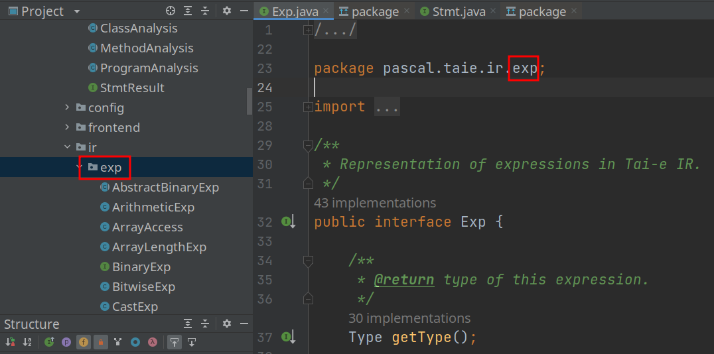
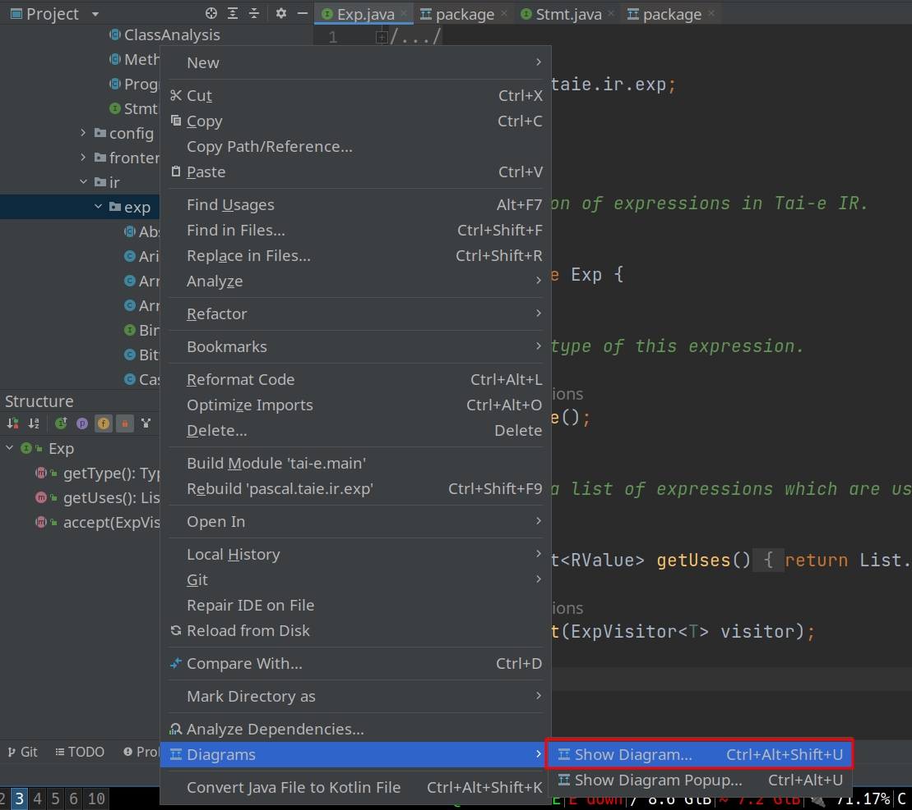
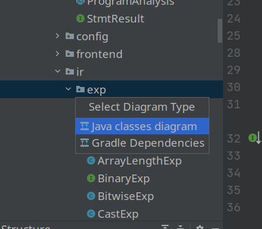

Java Class 可视化
竟然有如此方便的东西, 太棒了.
1. Hierarchy of Classes Within a Package
Tai-e 中的 pascal.taie.ir.exp.Exp 接口代表一个表达式,
子接口有 LValue 和 RValue. 变量 (Var) 既是左值也是右值,
而 BinaryExp (如 a+b) 等只能作为右值.
现在, 假设我想要知道都有哪些表达式 (哪些类实现了 Exp),
这些表达式哪些是左值 (实现了 LValue), 哪些是右值 (实现了 RValue).
首先搜索 Exp 类, 进入对应文件, 然后 Ctrl 并单击 package 名,
找到 pascal.taie.ir.exp 所在位置.
可以看到里面有 BinaryExp, CastExp 等不同的类.

然后右键对应的 package (即 pascal.taie.ir.exp), 找到 Diagrams → Show
Diagram (如果只是临时稍微看一下, 也可以选择 Show Diagram Popup).
 再选择 Java classes diagram
 然后就可以啦~
可能只能显示某个 package 下的类, 不能显示所有的, 不过一般问题不大.